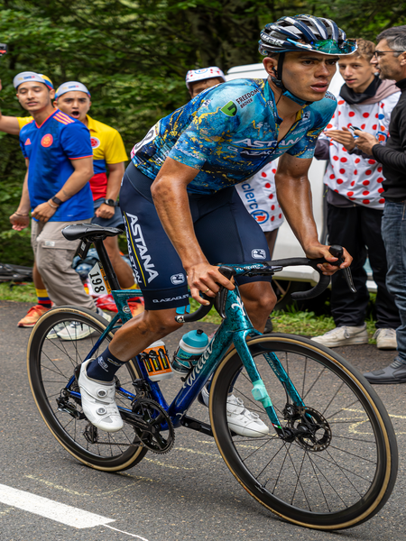

Harold Tejada
Datos personales
- Harold Alfonso Tejada Canacue
- 27 de abril de 1997
- Colombia
- XDS Astana Team
- 145

Datos equipos
- XDS Astana Team (2025 - Actualidad)
- Astana Qazaqstan Team (2020 - 2024)
- Team Medellín (2019)
- EPM (2017 - 2018)
Temporada 2025
| DATOS | RESULTADOS |
|---|---|
| Podiums | 1 |
| Carreras | 18 |
| Maillots | 0 |
| Equipos | 4 |
| Etapas | 21 |
Multimedia
Equipo XDS Astana Team en la Vuelta Ciclista a España 2026.